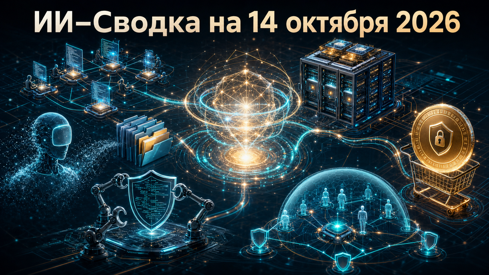

Повестка дня показывает, что конкуренция в ИИ всё сильнее зависит от среды исполнения: моделей с долговременной памятью, стоечной инфраструктуры, агентных интеграций и контроля действий в платежах и корпоративных системах.
Одновременно рынок получает менее оптимистичный сигнал из потребительского сегмента: Character.AI начала процедуру Chapter 11. На стороне разработки и безопасности компании продолжают формализовать правила для автономных coding-агентов и их подключений.
Meta выпустила серию Muse Wonder для персональных и профессиональных агентных задач. Базовая Muse Wonder доступна через Meta Model API и Muse Code, а более мощная Muse Wonder Full предназначена для подписчиков Muse Code. В анонсе Meta AI компания делает акцент на Active Memory, Active Focus, длительном выполнении задач и программировании.
Это важная проверка ставки компании на собственную линейку frontier-моделей и агентную платформу: модель должна не только отвечать в чате, но и удерживать контекст долгой работы. Заявления о лидерстве в тестах и характеристиках безопасности пока остаются заявлениями разработчика: независимых сравнений в доступном пуле нет.
AMD на OCP Global Summit представила Helion — эталонный 21-дюймовый rack-scale дизайн, который компания планирует передать экосистеме Open Compute Project. Как сообщает Tom's Hardware, CPU-конфигурация может включать до 128 процессоров EPYC 9996 поколения Venice — до 32 768 ядер.
Helion показывает, что для агентных систем важны не только GPU: значительная часть задач приходится на оркестрацию, sandbox-среды, инструменты и обработку запросов. Проект также допускает гибридную компоновку с ускорителями Instinct и высокоскоростной сетью, но сроки коммерческой доступности в источнике описаны неоднозначно, поэтому считать поставки уже подтверждёнными нельзя.
Cursor запустила Origin App Marketplace с более чем 20 интеграциями для CI, деплоя, мониторинга, управления проектами, code review и безопасности. В официальном changelog Cursor названы, в частности, Cloudflare, Linear, Sentry, Socket Security, Vercel, Netlify, Semgrep и CodeRabbit.
Платформа также открыта для сторонних приложений: Origin API поддерживает токены установки, webhooks, check runs, комментарии и review в pull request. Практический смысл — превратить coding-агента из отдельного инструмента в участника привычного контура разработки, где его действия можно связать с проверками, выпуском кода и политиками безопасности. Масштаб реального использования экосистемы пока не раскрыт.
American Express представила Intent Intelligence Framework для покупок, которые выполняет агент ИИ. По данным TechCrunch, схема использует Create Intent API, Intent ID и Proof of Intent Token, чтобы криптографически связать транзакцию с ограничениями, заранее заданными пользователем.
Вместо передачи агенту номера карты система должна проверять бюджет, продавца и параметры товара до выдачи защищённых платёжных реквизитов. Это попытка решить один из главных вопросов агентной коммерции: как технически доказать, что покупка действительно укладывается в одобренное человеком намерение. Массовое принятие подхода другими участниками платёжной отрасли пока не подтверждено.
Character.AI подала заявление о банкротстве по Chapter 11, указав активы и обязательства в диапазоне от 50 млн до 100 млн долларов. Как пишет TechCrunch, компания также согласовала продажу части активов Disney за 20 млн долларов и выдачу бессрочной неисключительной лицензии на технологию.
Сервис намерен продолжать работу во время процедуры продажи, однако при отсутствии приемлемого предложения может быть свёрнут. История Character.AI — заметный сигнал для потребительского ИИ: высокая узнаваемость чат-бота не гарантирует устойчивой экономики на фоне расходов, конкуренции и правовых рисков. Окончательная структура сделки и судьба платформы ещё не определены.
GitHub выпустила Copilot CLI 1.0.97. Согласно официальным release notes, custom agents получили agent-scoped declarative hooks, а инструмент стал лучше находить файлы агентов в крупных и глубоко вложенных репозиториях.
В релиз также вошло безопасное скрытие секретов в JSON-выводе с сохранением корректных ссылок на переменные. Для автономного режима Autopilot изменено поведение при hook-решении ask: вместо остановки на неотвеченном диалоге разрешений задача отклоняется. Это небольшой, но практически важный шаг к воспроизводимому управлению агентами в unattended-сценариях.
Pluto Security раскрыла совокупное финансирование в 42 млн долларов: 8,5 млн долларов seed и 34 млн долларов Series A, которую возглавила Jump Capital. По данным TechCrunch, компания предлагает наблюдение, анализ рисков и policy enforcement для корпоративных ИИ-инструментов, агентов, skills, расширений и MCP-серверов.
Компания заявляет, что часть её системы может вмешиваться в сессию агента при попытке получить избыточные разрешения. Сюжет отражает расширение рынка AI security от контроля отдельных моделей к контролю всей агентной среды: интеграций, действий, созданных сотрудниками приложений и подключённых инструментов. Данные о клиентах, выручке и эффективности продукта приведены со слов самой компании и не имеют независимой технической оценки.
*Meta и ее сервисы - в России запрещены